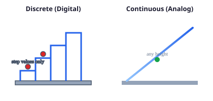

Information Technology
Class XI — Condensed Lecture Notes
Computer Systems · Computational Thinking · Python · Databases · Emerging Tech · Digital Literacy
Unit 1 — Computer Systems
- Differentiate analog vs digital representation; build and simulate logic circuits.
- Apply Boolean algebra, truth tables, and Logisim for gate-level design.
- Explain SDLC phases; compare Waterfall and Agile (Scrum) with case studies.
- Describe OSI and TCP/IP layers, encapsulation, and common protocols.
1.1 Digital foundations
Discrete quantities are countable (students in a class, books on a shelf). Continuous quantities vary smoothly (temperature, time, height). Digital systems encode information with two states: bit 0 (LOW/OFF/FALSE) and bit 1 (HIGH/ON/TRUE).
Analog signals can take many amplitude levels; digital signals switch between defined levels (typically two). Digital storage and copying resist noise better than analog chains of amplification.

1.2 Boolean algebra & logic gates
Boolean variables \(A, B, C \in \{0,1\}\). Basic operations:
- AND (product): \(A \cdot B\) — true only when both inputs are 1.
- OR (sum): \(A + B\) — true when at least one input is 1.
- NOT (complement): \(\overline{A}\).
De Morgan’s laws (exam favourites):
\[ \overline{A \cdot B} = \overline{A} + \overline{B}, \qquad \overline{A + B} = \overline{A} \cdot \overline{B} \]
Any Boolean function can be written in SOP (sum of products) or POS (product of sums) form, e.g. \(F = A\overline{B} + BC\).

- Create project → place gates from Explorer.
- Add input pins (square) and output pin/LED (circle).
- Wire inputs → gate → output; toggle inputs to verify truth table.
- Example: 2-input AND with \(Y = A \cdot B\).
Sample truth table — 2-input XOR
| A | B | \(A \oplus B\) |
|---|---|---|
| 0 | 0 | 0 |
| 0 | 1 | 1 |
| 1 | 0 | 1 |
| 1 | 1 | 0 |
1.3 Software Development Life Cycle (SDLC)
SDLC phases: planning / requirements → analysis → design → implementation (coding) → testing → deployment → maintenance. Choosing a model depends on requirement stability, stakeholder count, and need for early feedback.

Waterfall suits fixed specs (e.g. library management system with clear modules: catalog, issue/return, fines).
Agile / Scrum suits evolving mobile apps (e.g. school portal with shifting features): 2-week sprints, product backlog, review with users each increment.
1.4 Networking — OSI & TCP/IP

Encapsulation: each layer adds its header (and sometimes trailer) as data moves down the stack; the receiver strips headers moving up.
TCP/IP (practical Internet stack): Application → Transport (TCP/UDP) → Internet (IP) → Network Access (link + physical). OSI is a teaching model; TCP/IP is what most implementations follow.
| Layer (OSI) | PDU / role | Examples |
|---|---|---|
| Application (7) | Data | HTTP, DNS, SMTP |
| Transport (4) | Segment | TCP (reliable), UDP (fast) |
| Network (3) | Packet | IP, routers |
| Data Link (2) | Frame | MAC, switches |
| Physical (1) | Bits | Cables, Wi‑Fi radio |
Unit 2 — Computational Thinking
- Decompose problems; recognize patterns; abstract details; design algorithms.
- Write pseudocode; state properties of good algorithms (correct, finite, efficient).
- Apply search (linear, binary) and sorting (bubble, selection, insertion) algorithms.

Algorithm — finite, step-by-step procedure solving a class of problems. Pseudocode mixes English with structured keywords (IF, WHILE, FOR) without language syntax.
2.1 Searching
- Linear search — scan all \(n\) elements; worst case \(O(n)\).
- Binary search — requires sorted array; halve search space each step; \(O(\log n)\).
2.2 Sorting (know any two)
| Algorithm | Idea | Typical use |
|---|---|---|
| Bubble sort | Swap adjacent out-of-order pairs until sorted | Teaching; small \(n\) |
| Selection sort | Repeatedly pick minimum for current position | Simple, few swaps |
| Insertion sort | Build sorted prefix by inserting each element | Nearly sorted data |
Unit 3 — Programming in Python
- Distinguish low-level vs high-level languages; use Python IDEs (e.g. VS Code).
- Apply variables, data types, operators, control structures, functions, and modules.
- Understand frameworks/libraries ecosystem for career growth.
3.1 Language & environment
Python is interpreted, high-level, and emphasizes readable syntax. Use virtual environments and linters in VS Code; run via integrated terminal.
3.2 Control structures
- Sequence — statements execute in order.
- Selection —
if / elif / elsefor branching. - Iteration —
whileandforloops (often withrange()).
# Selection + loop example
total = 0
for mark in [72, 85, 91]:
if mark >= 50:
total += mark
print("Passing sum:", total)3.3 Functions & good style
Functions encapsulate reusable logic; use descriptive names, docstrings, and avoid magic numbers. Import standard modules (math, random) before third-party packages.
Unit 4 — Data and Analysis
- Relate data, information, database, and DBMS; identify components and keys.
- Design tables, relationships, forms, queries, and reports (e.g. LibreOffice Base).
- Apply integrity constraints and appropriate data types.
4.1 Core concepts
Data are raw facts; information is processed, meaningful data. A database is an organized collection; a DBMS manages storage, security, and concurrent access.
4.2 Keys & integrity
- Primary key — uniquely identifies a row.
- Foreign key — links to a primary key in another table (referential integrity).
- Constraints — NOT NULL, UNIQUE, CHECK, DEFAULT.
4.3 Forms & user interface
Forms provide structured data entry: identify data source, layout fields with validation, use wizards for quick prototypes, then refine labels and tab order for usability.
Unit 5 — Emerging Technologies
- Define AI, IoT, and data analytics at a high level.
- Discuss benefits, risks, ethics, and assistive applications.
5.1 Artificial Intelligence
AI systems perceive, reason, learn, and act. Machine learning is a subset where models improve from data rather than explicit rule lists only.
5.2 Internet of Things (IoT)
Network of sensors/actuators exchanging data with cloud services — smart home, agriculture, healthcare monitors. Security (firmware updates, strong passwords) is critical.
5.3 Data analytics pipeline
Collect → clean → explore → model → visualize → decide. Emphasize privacy, consent, and bias when interpreting results.
Unit 6 — Digital Literacy
- Compare qualitative vs quantitative data; choose collection strategies.
- Practice safe, ethical use of digital tools and online information.
- Plan small digital projects from problem statement to prototype.
6.1 Types of data
| Type | Nature | Examples |
|---|---|---|
| Qualitative | Descriptive, categories | Interview themes, open-ended survey text |
| Quantitative | Numeric, measurable | Test scores, response times, counts |
6.2 Collection methods
- Interviews / surveys — attitudes and self-reported behaviour.
- Observation — record actions in context.
- Prototypes & simulations — test ideas before full build.